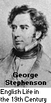

The year of 1804 is a date of seemingly infinite significance to the history of the railway. As a cumulative effect of all the previous developments in ironmaking and steam power, Richard Trevithick created the world's first successful locomotive by mounting one of his engines on a coach and using it to haul a cargo consisting of iron and some 70 passengers along more than 15 kilometres of track. Later, in 1808, Trevithick had an enclosed circular track constructed in London to publicly display his wonder to curious citizens.
His vehicle was soon copied by various other English inventors, including George Stephenson. In 1825, he opened the first ever public freight railway, which operated on a regular schedule covering a route of approximately 32 kilometres between the two communities of Stockton and Darlington. Stephenson was also responsible for the world's first passenger train, which regularly travelled 48 kilometres from Liverpool to Manchester. Another of his creations, the famous Rocket, could top speeds of 60 km/h.